Part 1: Fun with Filters
Part 1.1: Convolutions from Scratch!
Implementation of 2D convolutions using zero padding: comparing a 4-loop method with a vectorized 2-loop method.
Implementation
def apply_zero_padding(image: np.ndarray, pad_height: int, pad_width: int) -> np.ndarray:
padded_image = np.pad(image, pad_width=((pad_height, pad_height), (pad_width, pad_width)), mode='constant', constant_values=0)
return padded_image
def prepare_kernel_and_padding(kernel: np.ndarray):
flipped_kernel = np.flipud(np.fliplr(kernel))
pad_height = kernel.shape[0] // 2
pad_width = kernel.shape[1] // 2
return flipped_kernel, pad_height, pad_width
def convolve2d_four_loops(image: np.ndarray, kernel: np.ndarray) -> np.ndarray:
image_height, image_width = image.shape
flipped_kernel, pad_height, pad_width = prepare_kernel_and_padding(kernel)
padded_image = apply_zero_padding(image, pad_height, pad_width)
output_image = np.zeros((image_height, image_width), dtype=np.float64)
for row_idx in range(image_height):
for col_idx in range(image_width):
pixel_sum = 0.0
for kernel_row in range(flipped_kernel.shape[0]):
for kernel_col in range(flipped_kernel.shape[1]):
image_pixel = padded_image[row_idx + kernel_row, col_idx + kernel_col]
kernel_weight = flipped_kernel[kernel_row, kernel_col]
pixel_sum += image_pixel * kernel_weight
output_image[row_idx, col_idx] = pixel_sum
return output_image
def convolve2d_two_loops(image: np.ndarray, kernel: np.ndarray) -> np.ndarray:
image_height, image_width = image.shape
flipped_kernel, pad_height, pad_width = prepare_kernel_and_padding(kernel)
kernel_height, kernel_width = flipped_kernel.shape
padded_image = apply_zero_padding(image, pad_height, pad_width)
output_image = np.zeros((image_height, image_width), dtype=np.float64)
for row_idx in range(image_height):
for col_idx in range(image_width):
image_patch = padded_image[row_idx : row_idx + kernel_height, col_idx : col_idx + kernel_width]
output_image[row_idx, col_idx] = np.sum(image_patch * flipped_kernel)
return output_imagePart 1.2: Finite Difference Operator
To detect edges, we first compute the partial derivatives of the original Cameraman image in the horizontal ($x$) and vertical ($y$) directions using finite difference operators $D_x = [1, 0, -1]$ and $D_y = [1, 0, -1]^\top$. Combining these partial derivatives gives the gradient magnitude: $\text{Magnitude} = \sqrt{D_x^2 + D_y^2}$. Finally, thresholding the gradient magnitude produces a binarized edge map.
Implementation
def run_part_1_2(output_dir: str):
img_path = "cameraman.png"
cameraman_img = cv2.imread(img_path, cv2.IMREAD_GRAYSCALE)
if cameraman_img is None:
raise FileNotFoundError(f"Could not find '{img_path}'.")
cameraman = cameraman_img.astype(np.float64) / 255.0
# Define finite difference operators
Dx = np.array([[1, 0, -1]], dtype=np.float64)
Dy = np.array([[1], [0], [-1]], dtype=np.float64)
# Compute partial derivatives via 2D convolution
dx_img = scipy.signal.convolve2d(cameraman, Dx, mode='same', boundary='symm')
dy_img = scipy.signal.convolve2d(cameraman, Dy, mode='same', boundary='symm')
# Calculate gradient magnitude
grad_mag = np.sqrt(dx_img**2 + dy_img**2)
save_and_display(cameraman, os.path.join(output_dir, "13_cameraman_original.png"), "Original Cameraman")
save_and_display(dx_img, os.path.join(output_dir, "14_cameraman_dx.png"), "Dx Derivative")
save_and_display(dy_img, os.path.join(output_dir, "15_cameraman_dy.png"), "Dy Derivative")
save_and_display(grad_mag, os.path.join(output_dir, "16_cameraman_grad_mag.png"), "Gradient Magnitude")
# Evaluate multiple percentile-based thresholds
p70_val = np.percentile(grad_mag, 70)
p80_val = np.percentile(grad_mag, 80)
p85_val = np.percentile(grad_mag, 85)
p90_val = np.percentile(grad_mag, 90)
threshold_configs = [
(p70_val, "17_thresh_70th.png", f"Threshold 1: 70th Percentile ({p70_val:.4f})"),
(p80_val, "18_thresh_80th.png", f"Threshold 2: 80th Percentile ({p80_val:.4f})"),
(p85_val, "19_thresh_85th.png", f"Threshold 3: 85th Percentile ({p85_val:.4f}) - Selected"),
(p90_val, "20_thresh_90th.png", f"Threshold 4: 90th Percentile ({p90_val:.4f})")
]
for thresh_val, filename, title_text in threshold_configs:
binarized = (grad_mag > thresh_val).astype(np.float32)
save_and_display(binarized, os.path.join(output_dir, filename), title_text)Original Image, Partial Derivatives & Gradient Magnitude
The $D_x$ filter highlights vertical edges (changes across columns), while $D_y$ highlights horizontal edges (changes across rows). Combining them yields the orientation-invariant gradient magnitude map.
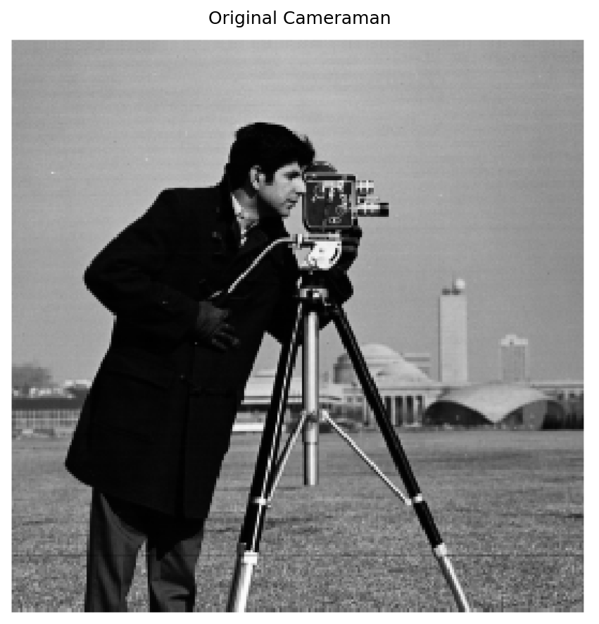
Original Image
Cameraman input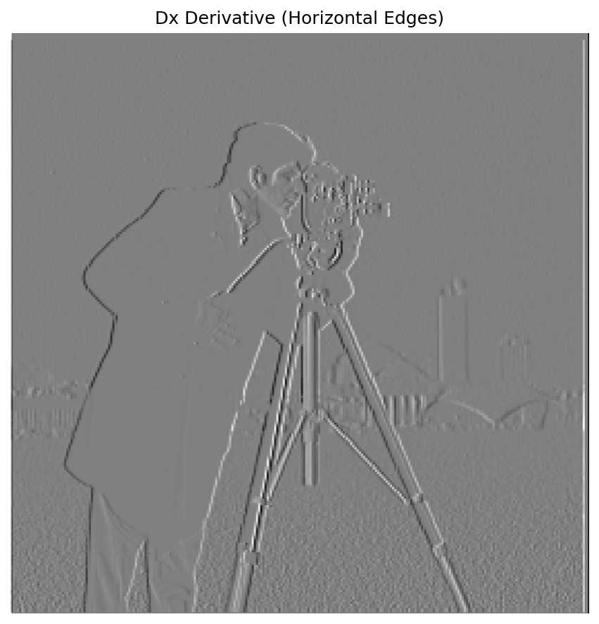
D_x Derivative
Horizontal gradient (vertical edges)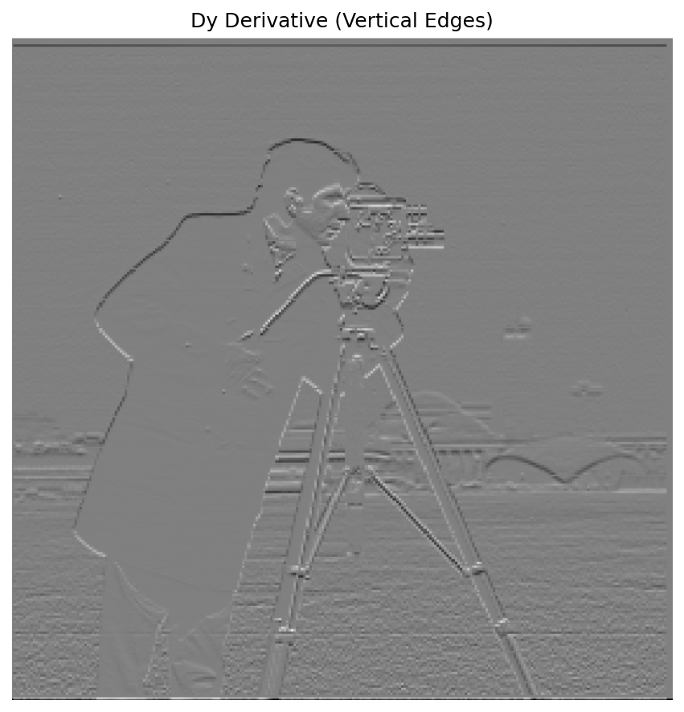
D_y Derivative
Vertical gradient (horizontal edges)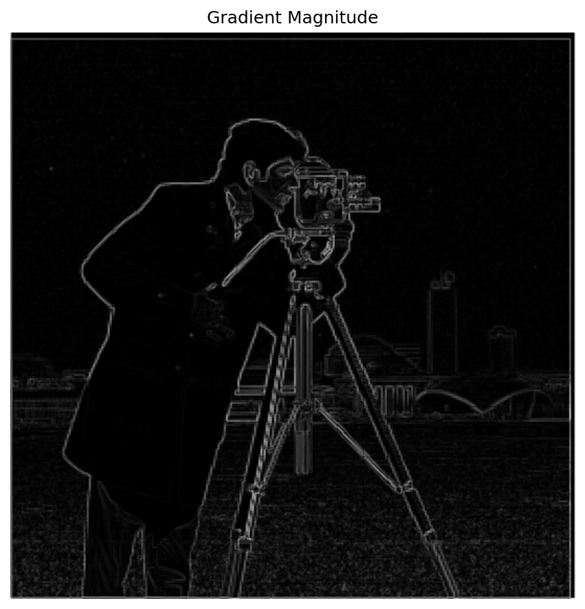
Gradient Magnitude
$\sqrt{D_x^2 + D_y^2}$Threshold Selection & Analysis
Finding the right threshold is a trade-off between suppressing high-frequency background noise (such as grass texture) and preserving structural edges (like the camera body, tripod legs, and skyline). Four percentile-based thresholds were tested:
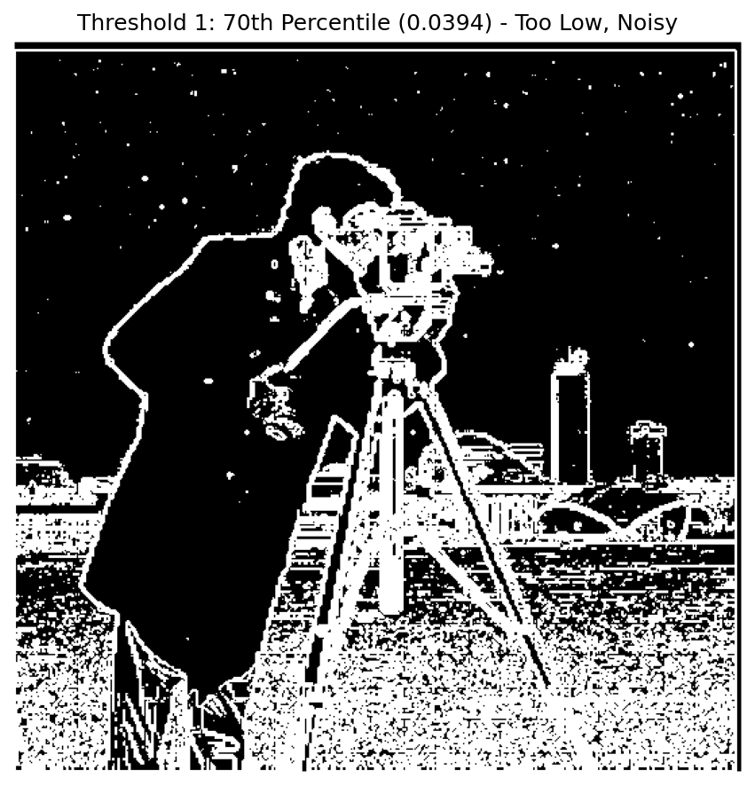
70th Percentile
Too Low: Captures excessive noise in the grass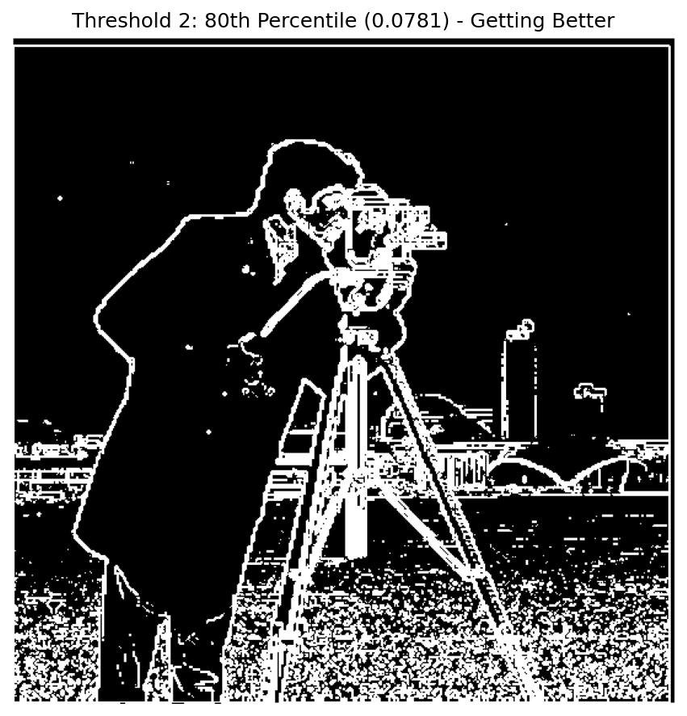
80th Percentile
Better: Retains main contours but still shows noise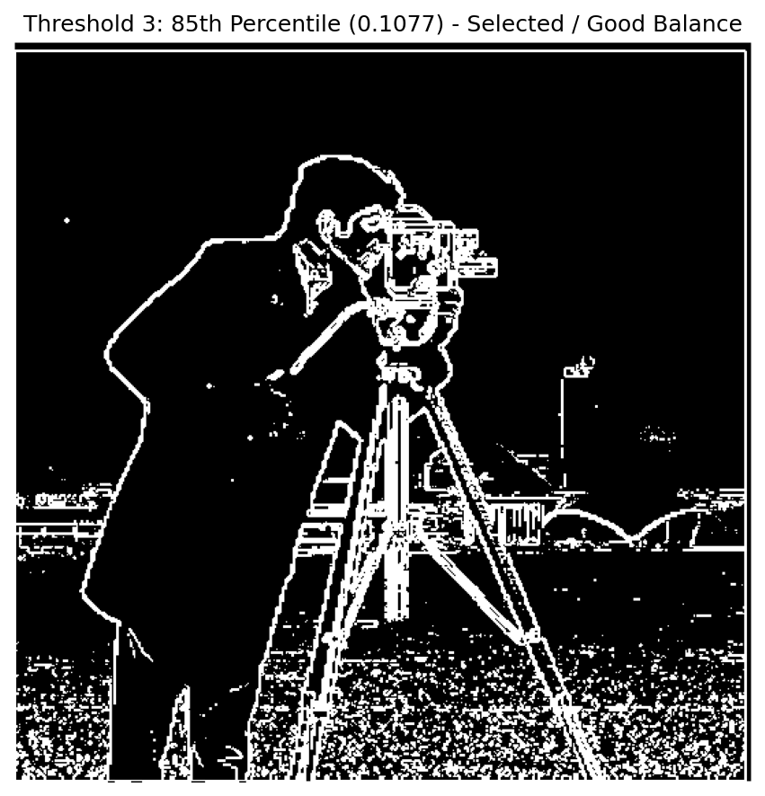
85th Percentile (Selected)
Optimal: Balanced noise reduction & edge detail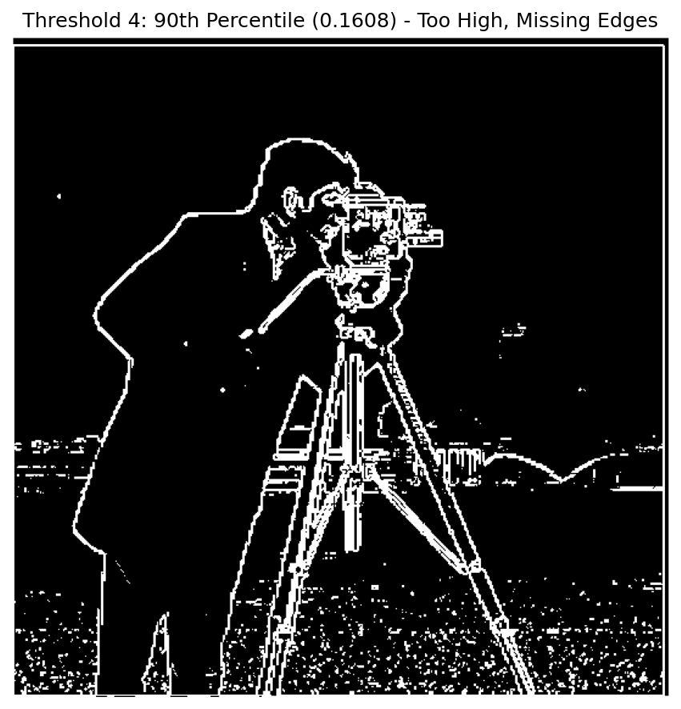
90th Percentile
Too High: Loses faint structural lines & tripod legsSelected Threshold Justification: The 85th percentile threshold was chosen as the optimal choice. It successfully eliminates most high-frequency background noise in the grass field while maintaining sharp, continuous outlines for the subject, tripod, camera, and horizon. The 70th and 80th percentiles contain noticeable noise artifacts, whereas the 90th percentile is too aggressive and cuts off key structural details of the tripod and coat.
Part 1.3: Derivative of Gaussian (DoG) Filter
Comparing two methods: (1) smoothing followed by finite difference derivative, vs. (2) convolving the image with pre-computed Derivative of Gaussian (DoG) filters.
Implementation
def create_2d_gaussian(kernel_size: int, sigma: float) -> np.ndarray:
gaussian_1d = cv2.getGaussianKernel(kernel_size, sigma)
gaussian_2d = np.outer(gaussian_1d, gaussian_1d.T)
return gaussian_2d
def run_part_1_3(output_dir: str):
img_path = "cameraman.png"
cameraman = cv2.imread(img_path, cv2.IMREAD_GRAYSCALE).astype(np.float64) / 255.0
gaussian_kernel = create_2d_gaussian(15, 2.0)
Dx = np.array([[1, 0, -1]], dtype=np.float64)
Dy = np.array([[1], [0], [-1]], dtype=np.float64)
# Method 1: Smooth then Derivative
smoothed_img = scipy.signal.convolve2d(cameraman, gaussian_kernel, mode='same', boundary='fill', fillvalue=0)
dx_method1 = scipy.signal.convolve2d(smoothed_img, Dx, mode='same', boundary='fill', fillvalue=0)
dy_method1 = scipy.signal.convolve2d(smoothed_img, Dy, mode='same', boundary='fill', fillvalue=0)
grad_mag_method1 = np.sqrt(dx_method1**2 + dy_method1**2)
# Method 2: Derivative of Gaussian Filters
DoG_x = scipy.signal.convolve2d(gaussian_kernel, Dx, mode='full')
DoG_y = scipy.signal.convolve2d(gaussian_kernel, Dy, mode='full')
dx_method2 = scipy.signal.convolve2d(cameraman, DoG_x, mode='same', boundary='fill', fillvalue=0)
dy_method2 = scipy.signal.convolve2d(cameraman, DoG_y, mode='same', boundary='fill', fillvalue=0)
grad_mag_method2 = np.sqrt(dx_method2**2 + dy_method2**2)
threshold = 0.07
binarized_edges_method1 = (grad_mag_method1 > threshold).astype(np.float32)
binarized_edges_method2 = (grad_mag_method2 > threshold).astype(np.float32)Method Comparison
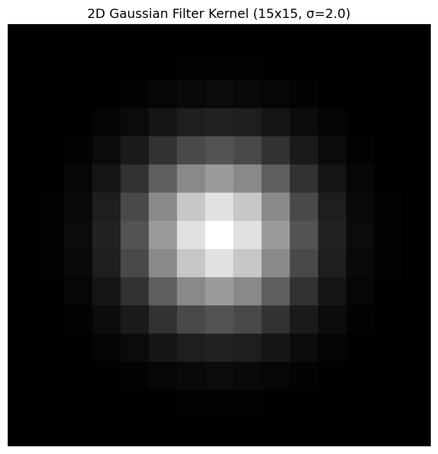
Gaussian Kernel
15x15, σ=2.0Smoothed Image
Low-pass Filtered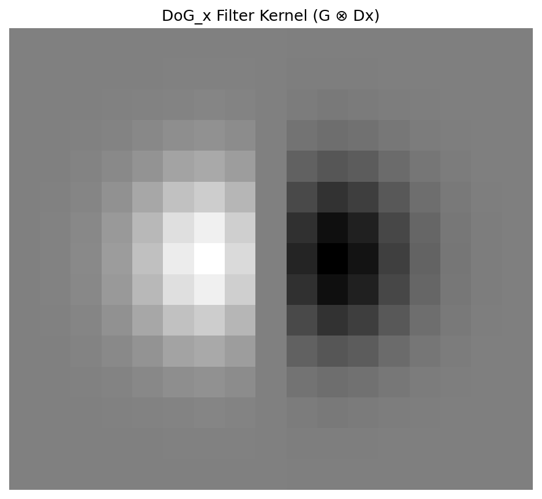
DoG X Kernel
G ⊗ Dx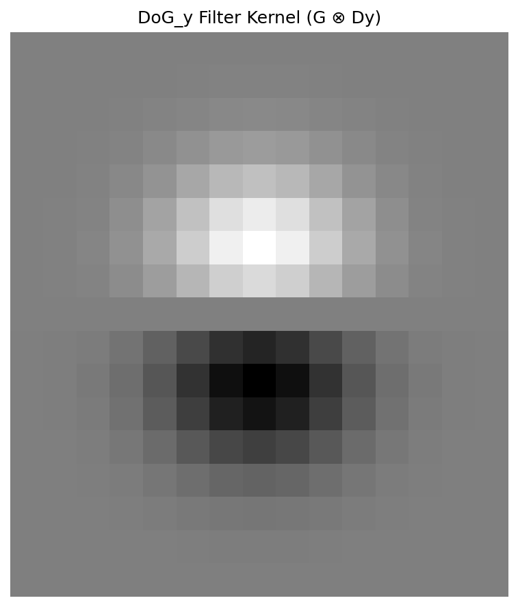
DoG Y Kernel
G ⊗ Dy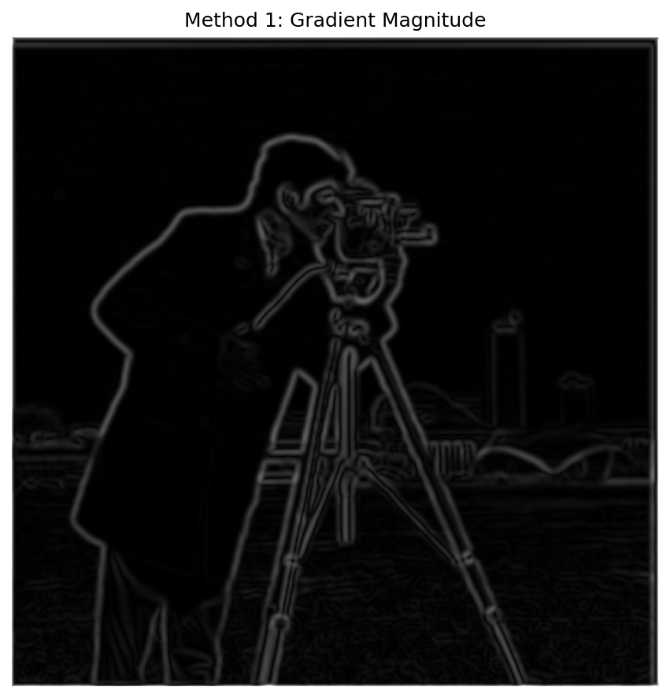
Method 1 Gradient
Smooth → Diff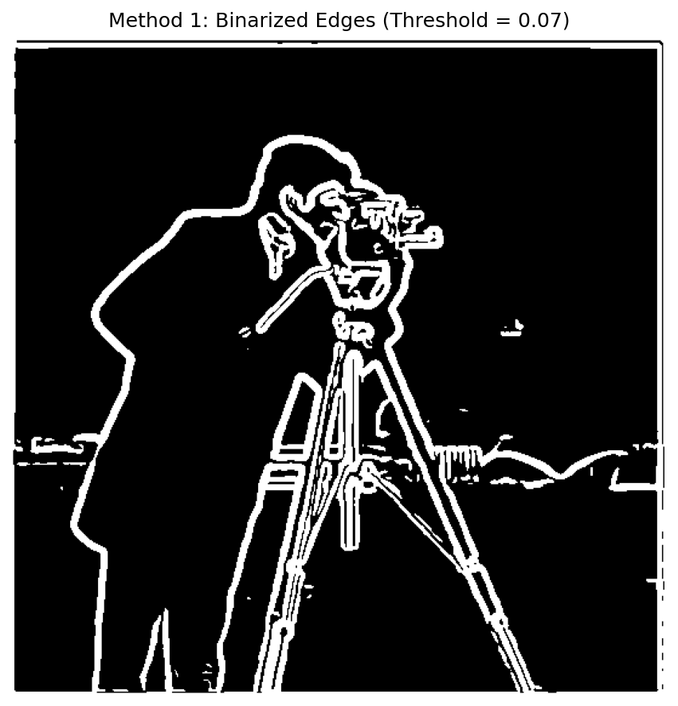
Method 1 Edges
Thresholded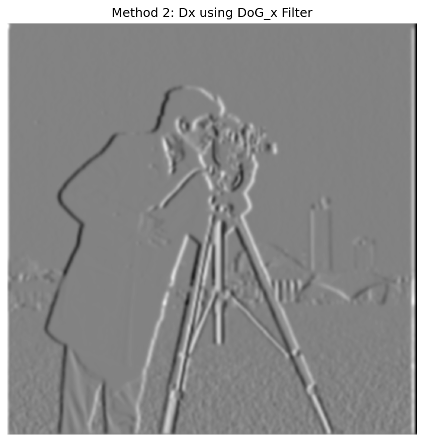
Method 2 Dx
DoG_x ConvolvedMethod 2 Edges
ThresholdedPart 2: Frequencies
Part 2.1: Image Sharpening
Using Unsharp Masking ($I_{sharp} = I + \alpha (I - G \otimes I)$) to boost high-frequency components.
Implementation
def unsharp_mask_single_kernel(img: np.ndarray, gaussian_kernel: np.ndarray, alpha: float) -> np.ndarray:
k_size = gaussian_kernel.shape[0]
e = np.zeros((k_size, k_size), dtype=np.float64)
e[k_size // 2, k_size // 2] = 1.0
unsharp_kernel = (1.0 + alpha) * e - alpha * gaussian_kernel
if img.ndim == 3:
sharpened_channels = [scipy.signal.convolve2d(img[:, :, c], unsharp_kernel, mode='same', boundary='symm') for c in range(3)]
sharpened = np.stack(sharpened_channels, axis=2)
else:
sharpened = scipy.signal.convolve2d(img, unsharp_kernel, mode='same', boundary='symm')
return np.clip(sharpened, 0.0, 1.0)Part 2.2: Hybrid Images
Combining high-pass filtered and low-pass filtered images to create optical illusions that change perception with distance.
Implementation
def process_hybrid_pair(img1_high_path: str, img2_low_path: str, sigma_high: float, sigma_low: float,
prefix: str, output_dir: str, gain: float = 1.0, compute_fft: bool = False):
im1_high = plt.imread(img1_high_path).astype(np.float64) / 255.0
im2_low = plt.imread(img2_low_path).astype(np.float64) / 255.0
im1_aligned, im2_aligned = align_images(im1_high, im2_low)
low_freq = apply_gaussian_blur(im2_aligned, sigma_low)
im1_blurred = apply_gaussian_blur(im1_aligned, sigma_high)
high_freq = im1_aligned - im1_blurred
hybrid = np.clip(low_freq + gain * high_freq, 0.0, 1.0)
save_multiscale_pyramid(hybrid, os.path.join(output_dir, f"{prefix}_06_multiscale.png"))Hybrid Results & Fourier Analysis
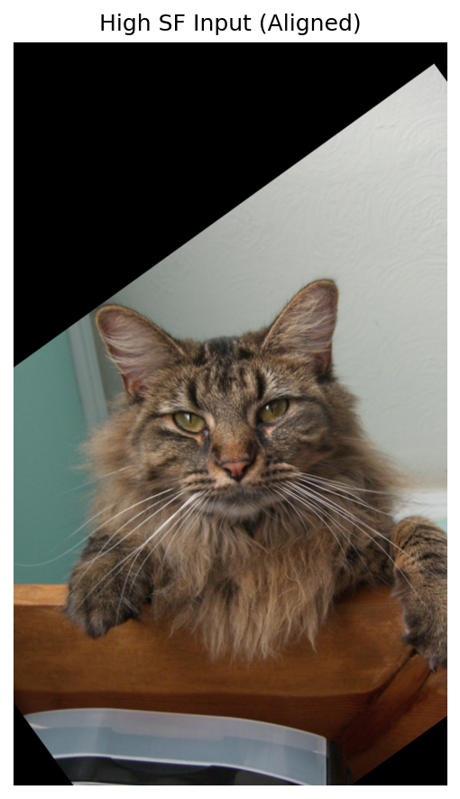
Nutmeg (High SF)
High Pass InputDerek (Low SF)
Low Pass Input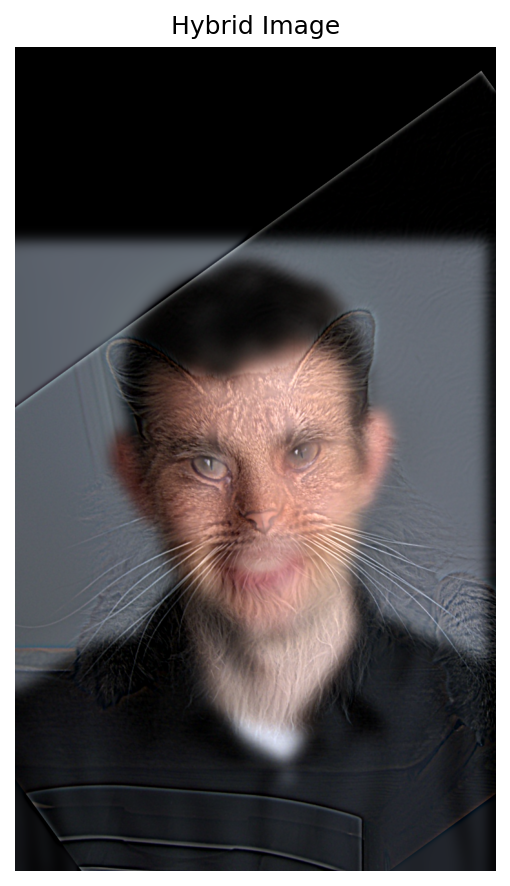
Hybrid Image
Combined Output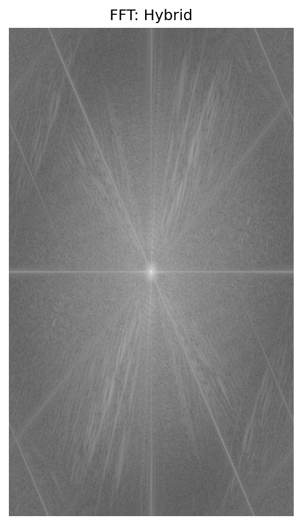
FFT Spectrum
Hybrid MagnitudePart 2.3 & 2.4: Gaussian & Laplacian Stacks & Multiresolution Blending
Decomposing images into frequency bands using Laplacian stacks and blending them seamlessly with a Gaussian mask stack (e.g., the Oraple).
Implementation
def build_gaussian_stack(img: np.ndarray, num_levels: int = 5, initial_sigma: float = 2.0) -> list:
stack = [img.copy()]
for k in range(num_levels):
sigma = initial_sigma * (2 ** k)
k_size = int(6 * sigma + 1)
if k_size % 2 == 0:
k_size += 1
g1d = cv2.getGaussianKernel(k_size, sigma)
g2d = np.outer(g1d, g1d.T)
if img.ndim == 3:
blurred = np.zeros_like(img)
for c in range(3):
blurred[:, :, c] = scipy.signal.convolve2d(img[:, :, c], g2d, mode='same', boundary='symm')
else:
blurred = scipy.signal.convolve2d(img, g2d, mode='same', boundary='symm')
stack.append(np.clip(blurred, 0.0, 1.0))
return stack
def build_laplacian_stack(gaussian_stack: list) -> list:
laplacian_stack = []
num_levels = len(gaussian_stack) - 1
for k in range(num_levels):
laplacian = gaussian_stack[k] - gaussian_stack[k + 1]
laplacian_stack.append(laplacian)
laplacian_stack.append(gaussian_stack[-1].copy())
return laplacian_stack
def blend_laplacian_stacks(laplacian_A: list, laplacian_B: list, mask_gaussian_stack: list) -> tuple:
blended_stack = []
stack_A_levels = []
stack_B_levels = []
for l_a, l_b, g_m in zip(laplacian_A, laplacian_B, mask_gaussian_stack):
if l_a.ndim == 3 and g_m.ndim == 2:
g_m = np.repeat(g_m[:, :, np.newaxis], 3, axis=2)
level_A = l_a * g_m
level_B = l_b * (1.0 - g_m)
blended_level = level_A + level_B
stack_A_levels.append(level_A)
stack_B_levels.append(level_B)
blended_stack.append(blended_level)
return blended_stack, stack_A_levels, stack_B_levels
def reconstruct_from_stack(laplacian_stack: list) -> np.ndarray:
reconstructed = np.sum(laplacian_stack, axis=0)
return np.clip(reconstructed, 0.0, 1.0)Stack Visualizations
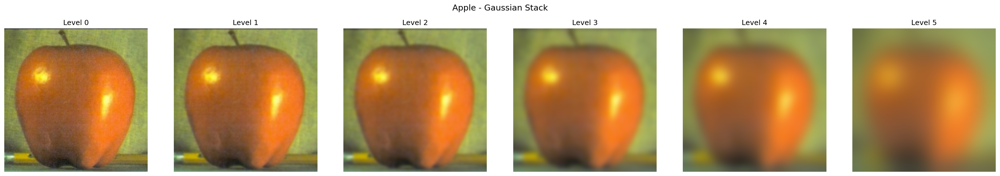
Apple - Gaussian Stack
Multi-scale blur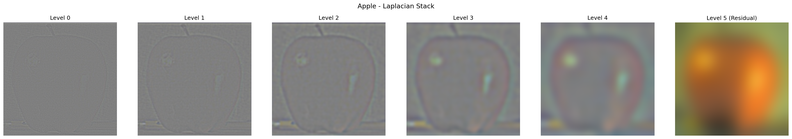
Apple - Laplacian Stack
Band-pass frequencies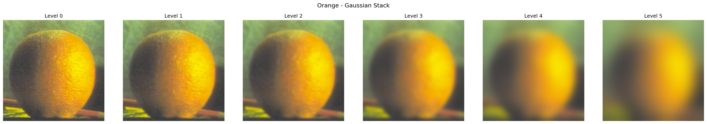
Orange - Gaussian Stack
Multi-scale blur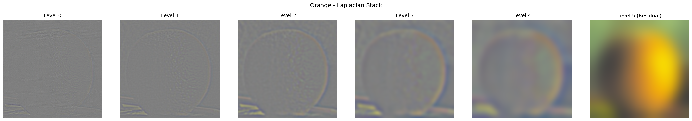
Orange - Laplacian Stack
Band-pass frequencies